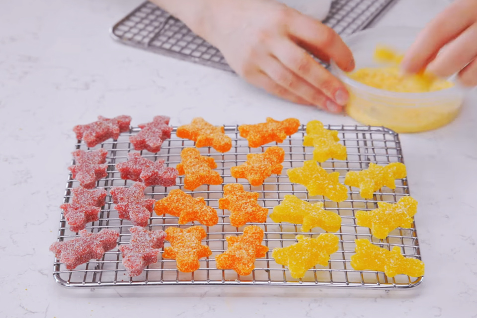

Yummy Gummies

So, gummies. Some say the most sacred of edibles. I say that they're just
the easiest to make. Melt down some gelatin, add cannabis, then let
it cool down. This recipe is simple to follow and simpler to execute.
Equipment
- Nonstick pan
- Wooden spoon or plastic spatula
- Silicon Molds
- Kitchen scale (if you don't have one, measuring cups are fine)
- Wax Paper
- Tablespoon
Ingredients
- 1/4 Cup of Cannabis Coconut Oil
- 28 Grams of Gelatin
- 180 Grams of Jello (Your Choice of Flavour/s)
- 4oz (1/2 Cup) of Water
- 30ml (2 Tablespoons) of Lemon Juice
- 45ml (3 Tablespoons) of Granulated Sugar
Cooking Instructions
- Place the non-stick pan onto a low-medium heat
- Add water and cannabis coconut oil to the pan and stir lightly
- Add 2 tablespoons of lemon juice
- Now, add gelatin, stirring out any lumps that may form
- In the meantime, line moulds with a small amount of granulated sugar,
ensuring an even coating across the entire bottom of the mould
- Once the heating mixture has no lumps of gelatin, add the jello
- Stir thoroughly and mix all of the ingredients together using a ‘whipping’ technique
- Once the ingredients have combined and oxygen bubbles begin to appear in the mixture,
quickly transfer from the pan to the measuring jug
- Once this has been done, pour the canna gummy mixture into the moulds and chill/freeze until solid
- Remove from the freezer/fridge and moulds. Top with a small amount of granulated sugar if desired.
- After around 2 hours in the freezer, your sour patch-style cannabis gummies are ready to eat